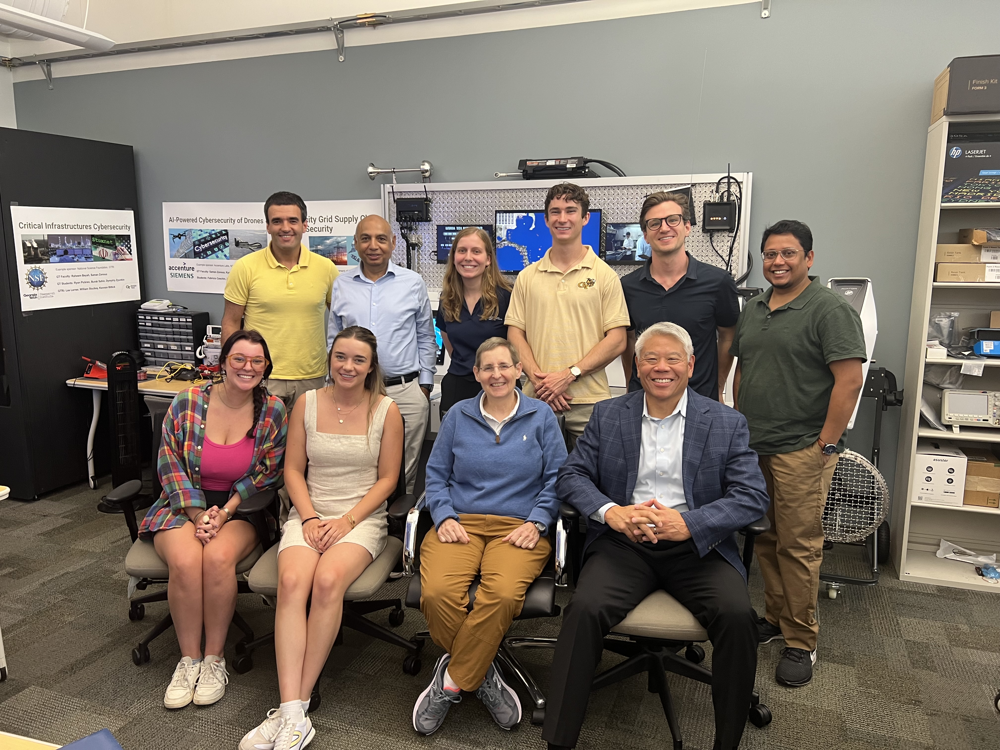
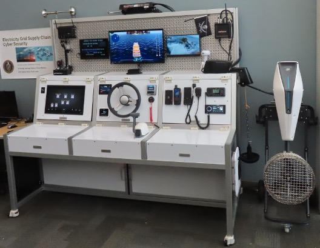
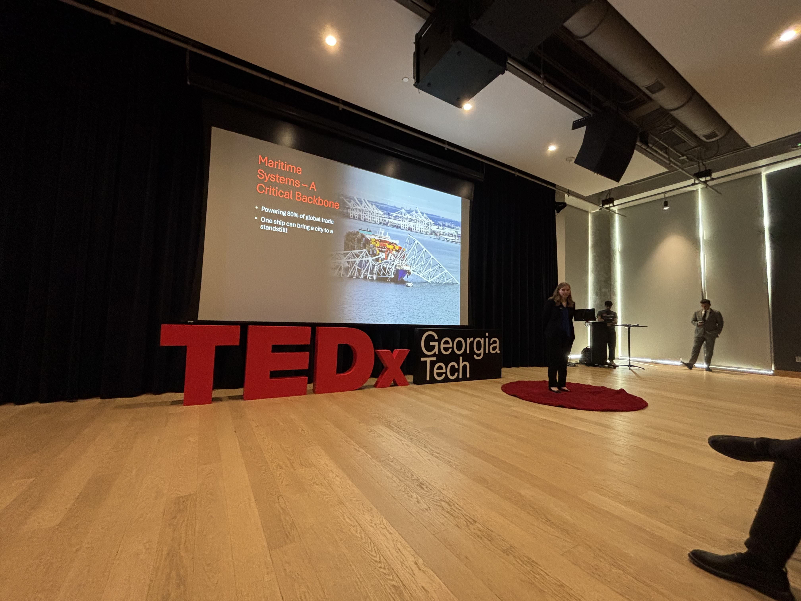
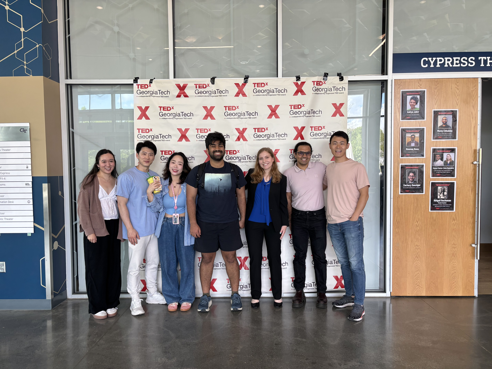

Talks
Below are some of the talks I've given at conferences and events. Slides and photos are included where available.
-
A Sea of Cyber Threats: Maritime Cybersecurity from the Perspective of MarinersPresentation of my first-author paper at the ACM Conference on Computer and Communications Security (CCS).


-
Hosted a Fireside Chat with Dmitri AlperovitchAs President of the Graduate Student Association for the School of Cybersecurity and Privacy, I hosted distinguished alumnus Dmitri Alperovitch (co-founder of CrowdStrike) for a fireside chat with Georgia Tech graduate students, discussing his career and insights on cybersecurity.


-
CPSec Lab Testbed TourDemonstrated the maritime cybersecurity testbed I built, along with ongoing research, to faculty members, the School of Cybersecurity and Privacy Chair, and distinguished visitors including John Tien (former Deputy Secretary of DHS) and Ann Dunkin (former CIO of the U.S. Department of Energy). 
-
The Invisible War: Protecting Our Future from Cyber ThreatsCo-presented with my advisor, Saman Zonouz, at TEDxGeorgia Tech on my work in maritime cybersecurity. 